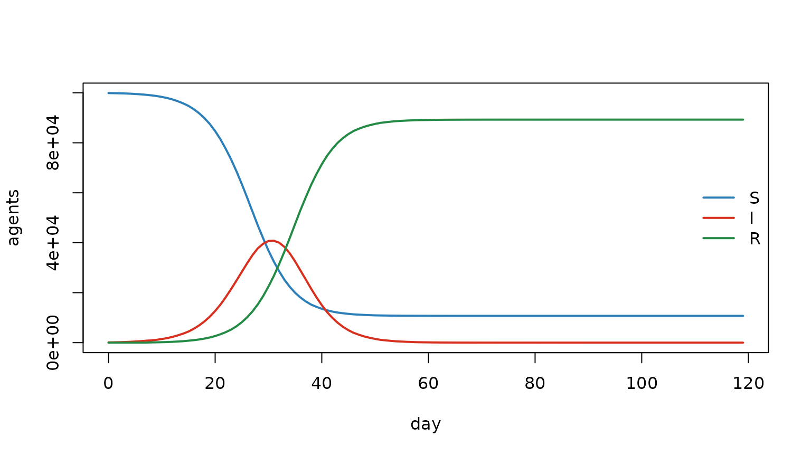

Using and extending Razer: from R callbacks to custom Rust kernels
Source:vignettes/articles/extending_razer.Rmd
extending_razer.RmdWho this is for. Human modelers and coding assistants (LLMs). It is the single reference for how to use Razer and how to extend it — and, critically, where the line sits between what you can do purely in R and what is better done by writing a new Rust kernel. The last two sections are a setup checklist and a copy-paste prompt for getting an LLM to write a correct Rust kernel for you.
For LLMs/agents: the hard rules are collected as a checklist in §7. The repository’s machine-readable conventions live in
CLAUDE.md; the kernel exemplars aresrc/rust/src/steps.rsandsrc/rust/src/transmission.rs.
There are three levels of working with Razer, in increasing power and effort:
| Level | You write… | Use it when… |
|---|---|---|
| 1. Run a model | one run_model() call |
your model is in the SI…SEIRS menagerie |
| 2. Customize in R | R callbacks + composed kernels | you add states, interventions, vital dynamics, custom reports |
| 3. Extend in Rust | a new #[extendr] kernel |
you need a novel per-agent computation that no existing kernel expresses |
Most users never leave Level 2. The whole point of this guide is to help you stay there as long as possible, and to make Level 3 approachable (by you or an LLM) when you genuinely need it.
1. Level 1 — run a model
run_model() builds the agent population and per-node
census from a scenario data frame, runs any of the eight
closed-population models in the correct per-tick order, and returns a
model environment.
m <- run_model(
data.frame(population = 1e5, I = 100L), # one node; seed 100 infectious
model = "SIR", nticks = 120L, beta = 2.5 / 8, # R0 = beta * 8 = 2.5
infectious_period = 8, seed = 1L
)
S <- m$nodes$S$values()[, 1]; I <- m$nodes$I$values()[, 1]; R <- m$nodes$R$values()[, 1]
matplot(0:119, cbind(S, I, R), type = "l", lty = 1, lwd = 2,
col = c("#2c7fb8", "#d7301f", "#238b45"), xlab = "day", ylab = "agents")
legend("right", c("S", "I", "R"), col = c("#2c7fb8", "#d7301f", "#238b45"), lwd = 2, bty = "n")
Key objects on the returned model:
-
m$people— the agent arrays (Columns):state(u8),timer(u16),nodeid(u16), pluscount/capacity. Agent data lives in Rust; read a snapshot with$values(). -
m$nodes— per-node, per-tick census (S/E/I/R/…) and flow (incidence,onset,recovery,waning) reportColumns, each ann_ticks × n_nodesmatrix via$values(). -
m$network,m$carry,m$states(the state→code map),m$tick(current interval).
The model menagerie and the per-tick ordering are covered in the final-size and endemic dynamics articles. Everything
below is about going beyond a single run_model()
call.
2. Level 2 — customize purely in R
This is where most extension happens, and it requires no Rust and no recompilation. You have two levers: callbacks and extra states, composed from a toolbox of R-callable kernels.
2.1 The callback lifecycle
run_model() accepts an init callback (run
once, before the loop) and three per-tick callbacks. The per-tick order
is fixed:
carry_forward → step_enter → step_*(kernel) → step_update → calc_foi → transmission → step_exit| Callback | Runs | Use it to… |
|---|---|---|
init(model) |
once, before tick 0 | allocate extra Columns
(e.g. dob/dod), build rate grids |
step_enter(model) |
start of each tick | per-tick bookkeeping before dynamics |
step_update(model) |
after the step kernel, before
calc_foi
|
edit drivers
(beta/seasonality/network) to
affect this tick; run extra timed transitions |
step_exit(model) |
end of each tick | births/deaths/imports, interventions, custom reports |
Timing subtlety (read this): calc_foi
reads the settled census I[t]. So a census
edit in step_update/step_exit affects
the next tick’s force of infection, while a
driver edit (beta,
seasonality, network) in
step_update affects the current tick.
model$tick is the current 0-based interval index.
2.2 Add agent states with extra_states
extra_states registers states beyond the model’s own
S/E/I/R:
- A known name —
"M"(maternal immunity) — keeps its built-in code, andrun_modelapplies the kernels’ M→S waning for you (recording thewaning_mflow). - A new name — e.g.
"V"(vaccinated),"Q"(quarantined) — is assigned the next freeu8code and becomes a genuine agent state. The disease kernels ignore unknown states (an agent inVis never infected or transitioned), so you drive its transitions from a callback. The codes are exposed inmodel$states.
# A vaccinated state, driven entirely from R — no Rust needed.
m <- run_model(scenario, "SIR", nticks = 365L, beta = 2 / 8,
infectious_period = 8, extra_states = "V", seed = 1L,
step_exit = function(model) {
if (model$tick == 30L) { # one-time campaign on day 30
# move some S -> V at 70% coverage in node 0 (illustrative)
# (use a kernel/report to pick agents; apply the count to the census)
move_count(model$nodes$S, model$nodes$V, vaccinated_per_node, model$tick)
}
})2.3 The R-callable kernel toolbox
These compiled kernels are callable from R and are the building
blocks you compose in callbacks. Each agent-loop kernel mutates
the agent arrays and returns per-node counts; you
apply those counts to the census with
move_count(from, to, counts, tick)
(from/to may be NULL for
one-sided moves — a death decrements only, a birth increments only).
| Kernel | Does | Returns |
|---|---|---|
move_count(from, to, counts, tick) |
apply a transition’s per-node counts to the census | — |
step_timer_expire(state, timer, nodeid, count, n_nodes, from, to) |
generic timed transition into an untimed state
(e.g. V→S waning, Q→R) |
per-node counts |
step_timer_expire_set(…, from, to, duration) |
generic timed transition into a timed state (sets a fresh timer) | per-node counts |
births(…) / mortality(…)
|
vital dynamics (newborns into M; retire by
date-of-death) |
counts |
import_infections(…) |
schedule-driven external seeding | counts |
constant_pop_vitals_sir(…) |
constant-population turnover | counts |
squash(people) |
compact dead agents out, reclaim slots | new live count |
bincount / bincount_wt /
bincount_where / bincount_where_wt
|
roll a per-agent property up into per-node counts (filtered/weighted) | integer vector / writes a report slice |
values_map(value, n_ticks, n_nodes) |
broadcast a scalar/vector/matrix into a driver grid | a Column
|
Worked patterns (all pure R, all in the interventions and vital dynamics articles):
-
Vaccination campaign —
extra_states = "V", moveS→Vin astep_exitcallback. -
Waning vaccine — additionally run
step_timer_expire(V → S)instep_update. -
Quarantine —
extra_states = "Q", detect infectious intoQ(a leaky, scheduled test), releaseQ→Rwithstep_timer_expire. -
Vital dynamics —
births/mortalityinstep_exit; size withcalc_capacity*. -
Importation —
import_infectionsinstep_exit(needscapacityheadroom). -
Custom reports —
bincount_where(nodeid, n_nodes, dob, "gt", tick - 5*365, count)for under-fives-by-node; write into an allocated reportColumn.
2.4 What you can do purely in R — checklist
If your idea is on this list, do not write Rust:
- ✅ Any of the eight menagerie models, on one node or a spatial network.
- ✅ Add new agent states and drive their transitions from callbacks.
- ✅ Interventions: vaccination (± waning), quarantine/isolation, treatment, ring strategies — anything expressible as moving agents between states using the kernels above.
- ✅ Vital dynamics, importation, age targeting, time-/space-varying
beta/seasonality. - ✅ Custom per-node reports via the
bincountfamily and your own reportColumns. - ✅ Anything that is a composition of existing timed transitions + per-tick R glue that operates on whole columns or on returned per-node counts (not on individual agents in an R loop).
3. The R-vs-Rust decision boundary
The single question that decides whether you need Rust:
Does your new behavior require a novel computation per agent, every tick, that is not a composition of existing kernels?
-
No → stay in R. Compose
step_timer_expire(_set),move_count, thebincountfamily, and the vital/import kernels in callbacks. These already contain the fast per-agent loops; your R code only orchestrates them and edits wholeColumns or per-node count vectors. -
Yes → write a Rust kernel. R cannot run a fast
per-agent inner loop (no JIT; an R
forover millions of agents is orders of magnitude too slow), and you cannot mutate the Rust-ownedColumns element-by-element from R without copying them out and back (which defeats the design and is usually infeasible foru8/u16in-place updates).
Concrete examples
| Want to… | R or Rust? | Why |
|---|---|---|
| Vaccinate a fraction of S each campaign | R | a state move; move_count
|
| Wane V→S after a timer | R | step_timer_expire |
| Quarantine detected infectious for 10 days | R | extra state + step_timer_expire
|
| Targeted reports (under-5 by node) | R | bincount_where |
A bespoke force-of-infection formula (not
calc_foi’s) |
Rust | a new per-agent/per-node inner loop |
| Within-host progression with per-agent heterogeneity not expressible as a fixed timed chain | Rust | novel per-agent update each tick |
| Agent-to-agent contact/pairing (households, networks of individuals) | Rust | inner loop over agent pairs |
| A new per-agent property updated every tick with custom logic (e.g. waning antibody titre → susceptibility) | Rust | per-agent computation over millions of agents |
A useful tell: if you find yourself wanting to write
for (i in seq_len(people$count)) in R, or to read a whole
agent Column into R, transform it, and write it back
every tick — that is the signal to move the loop into a
Rust kernel.
4. Level 3 — set up for Rust development
Razer’s kernels are Rust, compiled at install via extendr. To add one you need a Rust toolchain and the package’s dev tooling.
4.1 One-time setup
# 1. Install the Rust toolchain (rustc + cargo) via rustup:
curl --proto '=https' --tlsv1.2 -sSf https://sh.rustup.rs | sh
# 2. cargo installs to ~/.cargo/bin, which is often NOT on the default PATH.
# Make sure it is on PATH for R's compile/document steps:
export PATH="$HOME/.cargo/bin:$PATH"
# 3. R-side dev tooling:
install.packages(c("devtools", "rextendr", "testthat"))Razer’s DESCRIPTION already declares
SystemRequirements: Cargo … rustc >= 1.65.0.
4.2 The edit → build → test loop
devtools::document() # compiles the Rust, regenerates R/extendr-wrappers.R + man/*.Rd
devtools::load_all() # load the freshly built package
devtools::test() # run the testthat suiteAlways use devtools::document() after
changing a Rust signature (it recompiles and regenerates the R
wrappers and help pages). Do not use
rextendr::document() (deprecated). Rust
panics (assert!, panic!,
index out of bounds) are caught at the extendr boundary and surface in R
as stop() errors — so assert! is the idiomatic
way to validate inputs.
5. Level 3 — the kernel contract (ABI)
Every Razer agent-loop kernel follows the same shape. Read
src/rust/src/steps.rs (the cleanest exemplar) and
src/rust/src/transmission.rs alongside this.
The conventions, as hard rules:
-
Signature. Take the agent
Columns you read/mutate, ani32 count(active agents), ani32 n_nodes, and any&Distributions. TakeColumns by&(read) or&mut(write). -
Storage types.
stateisu8,timerisu16,nodeidisu16. Get a typed slice with the matching accessor:state.as_u8_mut(),timer.as_u16_mut(),nodeid.as_u16(), and (as_u32/as_i32_mut/as_f64/…) for other dtypes. These panic on a dtype mismatch. Always slice to the live prefix[..count]. -
Return per-node counts; touch no census buffers.
Return a
Listofinteger[n_nodes](named, e.g.list!(waned = …, onset = …)) or a singleVec<i32>. The R caller applies them withmove_count. Never write the node census inside the kernel. -
Parallelize with per-node tallies. Use
par_chunks_mut(rng::RNG_CHUNK), accumulate a privatevec![0i64; k * n]per chunk, andreduceby summing. No shared writes. -
Randomness goes through
rng. Pull onelet base = rng::next_call_base();before the parallel fan-out, thenlet mut rng = rng::chunk_rng(base, chunk_index);inside each chunk. This is what makes a seeded run reproducible independent of thread count — do not usethread_rng()or seed per-thread. -
Decrement guard.
if t[j] > 0 { t[j] -= 1; }before testing== 0(u16 must not underflow), and branch on the agent’s state so a just-arrived state is not advanced twice. -
Validate with
assert!(becomes an R error). -
Register it. Add
fn your_kernel;to the file’sextendr_module! { … }, and ensure the file’s module is listed insrc/rust/src/lib.rs(bothmod x;anduse x;inside itsextendr_module!). If it’s a new file, add both lines.
5.1 A minimal annotated skeleton
A generic kernel that flips agents in from_state to
to_state with per-agent probability p and
returns per-node counts — the template most new kernels start from:
// src/rust/src/myrule.rs
use extendr_api::prelude::*;
use rayon::prelude::*;
use crate::column::Column;
use crate::rng;
use rand::Rng; // for rng.gen::<f64>()
/// Flip each agent in `from_state` to `to_state` with probability `p`.
///
/// @param state Per-agent u8 state Column (mutated).
/// @param nodeid Per-agent u16 node-id Column.
/// @param count Number of active agents.
/// @param n_nodes Number of nodes (length of the returned vector).
/// @param from_state,to_state u8 state codes (as i32).
/// @param p Per-agent flip probability in [0, 1].
/// @return Integer vector of per-node flip counts.
/// @export
#[extendr]
fn flip_state(
state: &mut Column,
nodeid: &Column,
count: i32,
n_nodes: i32,
from_state: i32,
to_state: i32,
p: f64,
) -> Vec<i32> {
assert!(count >= 0 && n_nodes >= 0, "`count`/`n_nodes` must be non-negative");
assert!((0.0..=1.0).contains(&p), "`p` must be in [0, 1]");
let (count, n) = (count as usize, n_nodes as usize);
let (from, to) = (from_state as u8, to_state as u8);
let base = rng::next_call_base(); // ONE base per call, before fan-out
let st = &mut state.as_u8_mut()[..count];
let nid = &nodeid.as_u16()[..count];
let tally: Vec<i64> = st
.par_chunks_mut(rng::RNG_CHUNK)
.enumerate()
.zip(nid.par_chunks(rng::RNG_CHUNK))
.map(|((ci, s), node)| {
let mut rng = rng::chunk_rng(base, ci); // deterministic per-chunk stream
let mut local = vec![0i64; n];
for j in 0..s.len() {
if s[j] == from && rng.gen::<f64>() < p { // rand's Rng::gen: uniform [0, 1)
s[j] = to;
local[node[j] as usize] += 1;
}
}
local
})
.reduce(|| vec![0i64; n], |mut a, b| { for k in 0..n { a[k] += b[k]; } a });
tally.iter().map(|&x| x as i32).collect()
}
extendr_module! {
mod myrule;
fn flip_state;
}…then add mod myrule; and use myrule; to
lib.rs, run devtools::document(), and call it
from a callback, applying its counts with move_count:
step_exit = function(model) {
flips <- flip_state(model$people$state, model$people$nodeid, model$people$count,
length(model$states) - 1L, model$states[["S"]], model$states[["V"]], 0.01)
move_count(model$nodes$S, model$nodes$V, flips, model$tick)
}
rng.gen::<f64>()isrand’sRng-trait method for a uniform draw in[0, 1)(hence theuse rand::Rng;) — the same per-agent drawtransmission.rsuses to turn a per-node probability into infections.
5.2 Don’t forget the test
Every kernel ships a test (tests/testthat/test-*.R). The
standard pattern is a parallel-vs-serial census check:
run the kernel on a large population, then confirm the returned per-node
counts equal a direct R tally of the resulting agent states.
Reproducibility is checked by running twice under
set_seed() and asserting identical results.
6. Prompting an LLM to write the Rust kernel
An LLM that is given the conventions and an exemplar can write a correct Razer kernel reliably. The recipe:
Give it this context:
- The exemplar files verbatim:
src/rust/src/steps.rs(the ABI in action) and the target file you’re adding to. Tell it these are the style/ABI to match. - The eight hard rules from §5 (return per-node
counts,
u16timers + decrement guard,rng::next_call_baseonce +rng::chunk_rngper chunk for thread-independent reproducibility,assert!for validation, register in the file’sextendr_module!and inlib.rs). - The commenting convention: this codebase is read by
C/C++/C#/Python programmers who do not know Rust — comment
Rust-specific idioms (
&/&mut, slices,match, closures, iterators,Option/Result/?,unsafe, what#[extendr]generates). - The dev loop:
devtools::document()thendevtools::test(); panics become R errors.
A copy-paste prompt template:
You are adding a kernel to Razer, an R package whose performance kernels are Rust exposed to R via
#[extendr]. Follow the existing ABI exactly — here is the reference exemplar:«paste the full contents of src/rust/src/steps.rs»Task: write a kernel
«name»that, for each active agent, «describe the per-agent computation precisely: which Columns it reads/writes, the condition, the state change, any timer/distribution, what per-node quantity to count».Requirements (do not deviate): - Signature takes the agent
Columns,count: i32,n_nodes: i32, and any&Distributions; takeColumns by&/&mut; slice to[..count]. -stateisu8,timerisu16,nodeidisu16; useas_u8_mut/as_u16_mut/as_u16. Guard timer decrements (if t>0 { t-=1 }). - Return per-node counts asVec<i32>or a namedListofinteger[n_nodes]; do NOT write any node census inside the kernel. - Parallelize withpar_chunks_mut(rng::RNG_CHUNK)+ a private per-nodeVec<i64>reduced by summing. - For randomness:let base = rng::next_call_base();once before the fan-out, thenrng::chunk_rng(base, chunk_index)inside each chunk (this keeps seeded runs reproducible regardless of thread count). Never usethread_rng. - Validate inputs withassert!. - Addfn «name»;to the file’sextendr_module!, and tell me the exactlib.rsedits. - Comment Rust idioms for a C/C#/Python reader (per the repo convention). - Write aroxygen/extendr doc comment with@param/@return/@export. - Also write atestthattest asserting the returned per-node counts equal a direct R census of the mutated agent states at ~1e6 agents, plus a reproducibility check underset_seed().After I paste back any compiler errors from
devtools::document(), fix them.
Iterate by pasting compiler/test output back to the LLM. Because panics become R errors and the test compares against an independent R census, you get a tight correctness loop.
7. Quick reference for LLMs / agents
Collected hard rules (see §5 for detail):
-
Stay in R unless the task needs a novel
per-agent computation every tick that isn’t a composition of
step_timer_expire(_set)+move_count+ the vital/import/bincountkernels. A wish to write a per-agentforloop in R, or to round-trip a whole agentColumnthrough R each tick, means: write Rust. -
Kernel ABI:
#[extendr] fn, args = agentColumns +count: i32+n_nodes: i32+&Distributions;Columns by&/&mut, sliced[..count];stateu8/timeru16/nodeidu16viaas_u8_mut/as_u16_mut/as_u16; return per-node counts (aVec<i32>or namedList), never touch the node census; parallelize withpar_chunks_mut(rng::RNG_CHUNK)+ per-chunkVec<i64>reduced by sum. -
RNG:
rng::next_call_base()once before fan-out,rng::chunk_rng(base, ci)per chunk — thread-count-independent reproducibility. Neverthread_rng. -
Validate with
assert!(→ R error). Guardu16timer decrements. -
Register in the file’s
extendr_module!and insrc/rust/src/lib.rs(mod/use). -
Build:
devtools::document()(recompiles + regenerates wrappers/man), thendevtools::test(). Comment Rust idioms for a non-Rust (C/C#/Python) reader. -
Exemplars:
src/rust/src/steps.rs,src/rust/src/transmission.rs. Conventions:CLAUDE.md.